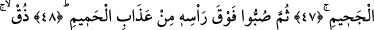

CENNET VE CEHENNEMLİKLERİN
YİYECEK VE GİYECEKLERİ
43. Şüphesiz zakkum ağacı,
44. Günahkârların yemeğidir.
45. O, karınlarda maden eriyiği gibi kaynar
46. Kaynar suyun kaynaması gibi.
47. (Allah zebânilere emreder): “Tutun onu! Cehennemin ortasına sürükleyin!”
48. “Sonra başının üstüne kaynar su azâbından dökün!”
49. “(ve deyin ki:) Tat bakalım, hani sen üstündün, şerefliydin.”
50. İşte o kuşkulanıp durduğunuz şey budur!”
51. Müttakîler ise hakîkaten güvenilir bir makamdadırlar.
52. Bahçelerde ve çeşme başlarında.
53. İnce ipekten ve parlak atlastan giysiler giyerek karşılıklı otururlar.
54. Ayrıca onları, iri gözlü hûrîlerle de evlendirmişizdir.
55. Orada, güven içinde, her meyveyi isterler.
56. Orada ilk ölümden başka ölüm tadmazlar (sürekli yaşarlar). Ve (Allah) onları
cehennem azâbından korumuştur.
57. Rabbinden bir lutuf olarak (bu nîmetler kendilerine verilmiştir). İşte, o büyük
başarı budur.
58. Biz onu (Kur’ân’ı) senin diline kolaylaştırdık ki, düşünüp öğüt alsınlar.
59. Biraz bekle, onlar da beklemektedirler (yakında başlarına neler geleceğini